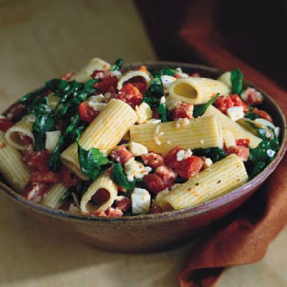

Rigatoni with Salami, Mozzarella, and Arugla

Description
True Italian-made salami is not available to everyone outside of Italy, but many domestic versions are excellent, especially if you buy from a shop that makes its own. For a pasta sauce, try the southern-style cacciatorini, soppressata or Genoa-style salami. Many varieties come in a mild or spicy version. Taste a piece to make sure you like its flavor. Salami is best in a pasta sauce when cooked only briefly, so add it in the final minutes.
Ingredients
- 1/4 cup extra-virgin olive oil, plus a little more for drizzling
- 4 garlic cloves, thinly sliced
- 14 plum tomatoes, medium diced
- A splash of dry white wine
- 1 lb. of Rigatoni
- 1/4 lb. chunk salami, cut into small cubes
- Salt and pepper to taste
- 1/2 lb. mozzarella cheese, cut into small cubes
- 1 bunch arugla, remove stems
- 1 cup grated pecorino romano cheese
Steps
- In a large fry pan over medium-low heat, warm the 1/4 cup olive oil. Add the garlic and sauté until it is very lightly golden, 1 to 2 minutes. Add the tomatoes, increase the heat to medium and cook until the tomatoes begin to release their juices, 4 to 5 minutes. Add the white wine and let it boil away for a few minutes.
- Meanwhile, bring a large pot of water to a boil over high heat. Generously salt the boiling water, add the pasta and cook until al dente (tender but firm to the bite), 12 to 14 minutes.
- Add the salami to the tomato sauce and season with salt and pepper. Remove from the heat.
- Drain the pasta well and put it in a warmed large, shallow bowl. Add the tomato sauce and toss. Add the mozzarella, arugula and a generous drizzle of olive oil and toss gently. Add a handful of the pecorino cheese and toss. Serve immediately. Pass the remaining pecorino cheese at the table.